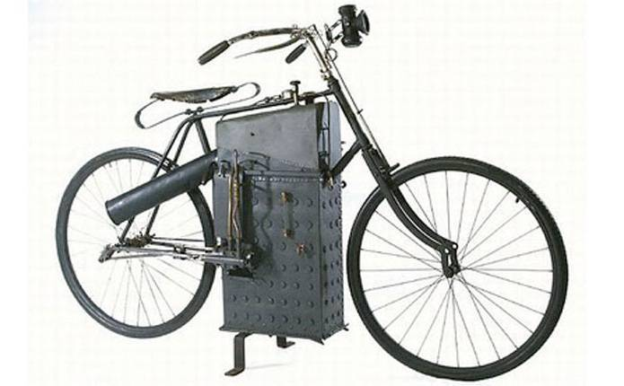
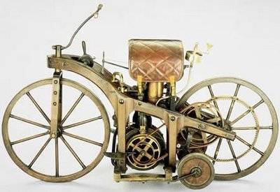
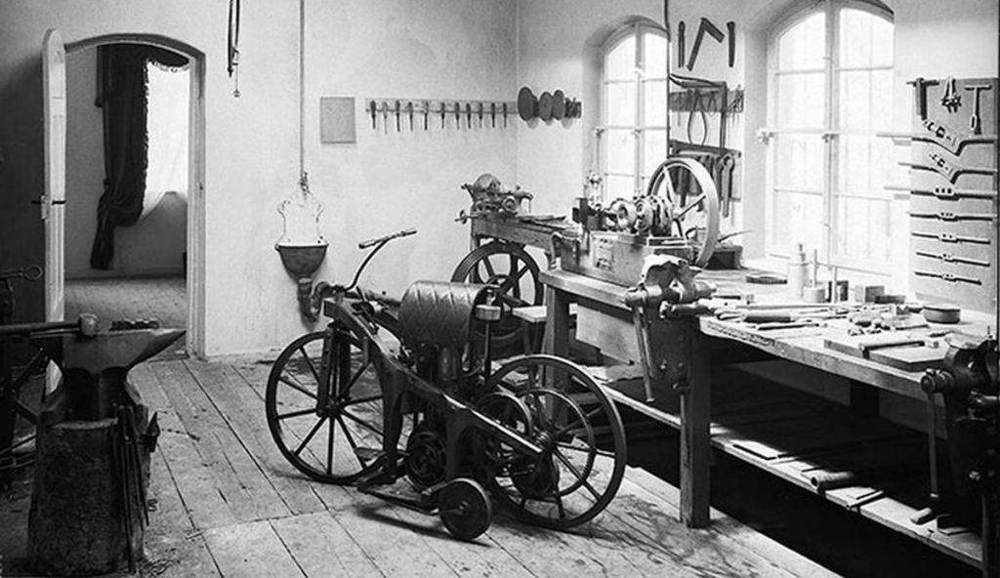

| Historia |
Creacion | Evolucion |
Origen Y Avances |
Curiosidades |
Datos |
Empresas |
Modelos |
Formulario |
Galeria |
Para ver la primera motocicleta de la historia hay que remontarse hasta el año 1867, cuando el estadounidense Sylvester Howard Roper creó un motor de vapor con dos pistones de 164cc cada uno, que era accionado por carbón. Lo hizo en la ciudad de Springfield en plena guerra civil norteamericana. Howard Roper falleció en el año 1886 mientras conducía su motocicleta a 64 km/h, tratando de romper el récord de velocidad sobre una motocicleta a vapor. Este modelo está considerado como la primera motocicleta de la historia, aunque hay mucha gente que asegura que realmente fue 18 años más tarde cuando se creó la moto como tal, ya que hay que recordar que la de Howard Roper era una moto a vapor, más cerca de la bici que de la propia motocicleta.

Moto con motor a vapor creada por Sylvester Howard Roper

Moto con motor de combustión creada por Maybach y DaimlerFue en 1885 cuando se creó la primera moto con motor de combustión, siendo Wilhelm Maybach y Gottlieb Daimler en Alemania, los encargados de fabricar este modelo. Recibió el nombre de “automóvil montable” (riding car), y contaba con un cuadro de madera, un motor de 4 tiempos instalado sobre unos bloques de goma, y cuatro ruedas de madera con rodadura de hierro; las dos principales y otras dos laterales que aportaban estabilidad. La “Riding Car” disponía de un motor de 1 – 2 caballos y funcionaba a 600 RPM, alcanzando una velocidad máxima de 11 km/h. Actualmente se puede visitar en el museo de Mercedes Benz, y sin duda merece la pena para darte cuenta de cómo ha avanzado la tecnología y la industria del motor en todos estos años.
Si valoramos que las motos de vapor son motos como tal, la primera moto de la historia pertenece a Sylvester Howard Roper. De hecho, Estados Unidos no duda en presumir gracias a él de ser el país que inventó la primera motocicleta del mundo. Si en cambio nos centramos en el motor de combustión para hablar de la moto como tal, fueron Maybach y Daimler los que se llevan este mérito. Aunque es posible que el prototipo de Howard Roper no fuese realmente el de una moto, sí que hay que reconocer que los modelos posteriores se basaron e inspiraron en él, mejorando las prestaciones y llegando a captar verdaderamente la atención del público. Desde Pont Grup damos una gran importancia a ambos modelos, siendo conscientes de que los dos desempeñaron un papel protagonista y fueron clave para disfrutar de las motos que tenemos hoy en día.
